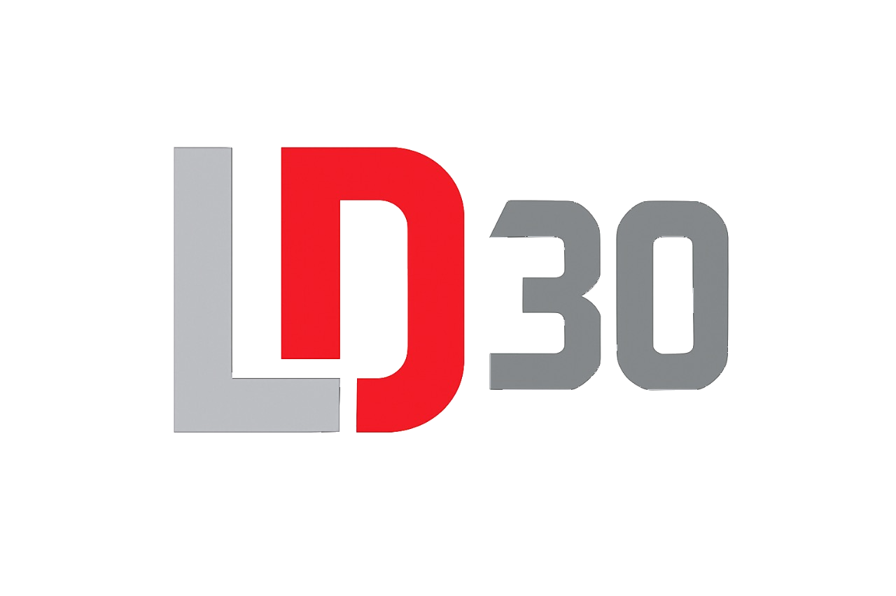
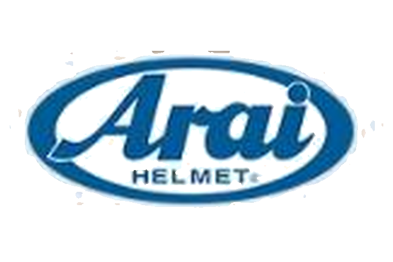
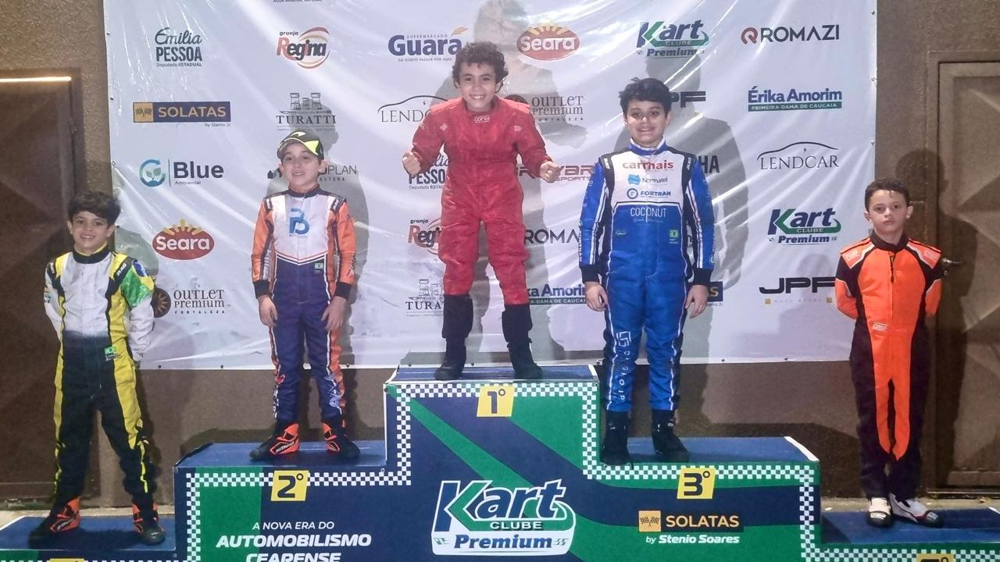
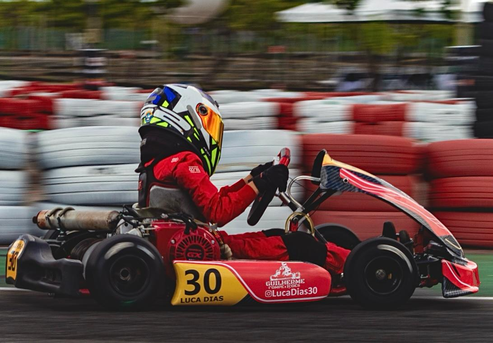
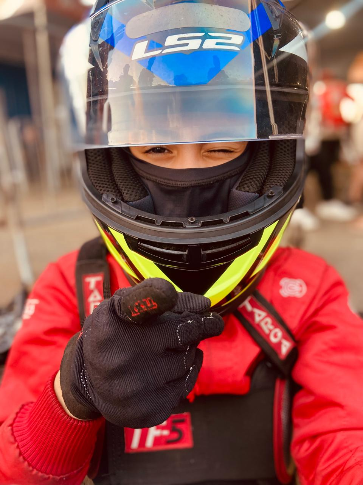

Luca Dias tem 9 anos e compete na categoria Cadete. Começou a correr de kart aos 7 anos — numa época em que o Ceará vivia um vazio no esporte: o Kartódromo do Eusébio, principal palco do estado, havia fechado alguns anos atrás, e não existia categoria Mirim em atividade por aqui. Enquanto não dava para ir a pistas maiores, o treino era no Kart Mônaco, uma pista menor, mas importantíssima para o desenvolvimento: foram literalmente milhares de voltas só no primeiro ano de acesso ao kart. Em 2024, a família foi uma vez ao Kartódromo Internacional Paladino, em Conde (PB), com um kart alugado, só para testar se Luca levava jeito em um kartódromo profissional. O resultado foi bom o suficiente para decidirem ir além — e em 2025 o Luca disputou duas etapas por lá.
O kart cearense começou a ressurgir no ano passado, com a retomada da Copa Fortaleza de Kart (CFK) no Kartódromo Marcelino, em Morada Nova. Neste ano o movimento engrenou de vez: o Campeonato Cearense de Kart voltou a ser disputado, agora no novo KartClube Premium (Caucaia), dando à categoria estrutura, visibilidade e um calendário mensal consistente. O evento como um todo, somando todas as categorias em disputa no mesmo dia, já reúne público estimado em milhares de espectadores por etapa.
Nesse cenário, Luca lidera hoje simultaneamente o Campeonato Cearense de Kart 2026 e a Copa Fortaleza de Kart 2026, com resultado sustentado em todos os locais onde já correu — o histórico completo, corrida a corrida, está na próxima seção.
Cobertura de mídia espontânea já conquistada
Mídia espontânea (earned media) é o selo de credibilidade que nenhuma verba de publicidade compra sozinha: veículos e editorias independentes já validaram a trajetória de Luca, o que reduz o risco de associação da marca e reforça a prova social diante de outras famílias e patrocinadores.
Campeonatos regionais (Ceará e Paraíba) — não nacionais. O que chama atenção não é um título isolado, mas a consistência: pódio ou vitória em praticamente todas as etapas disputadas até aqui.
O maior ativo de mídia de Luca hoje é digital: alcance mensurável, ativo o ano inteiro — não só nos dias de corrida — e já circulando além da própria base de seguidores. A presença em pista soma-se a isso, mas é o digital que sustenta a exposição da marca todos os dias.
A conta @lucadias30 é administrada exclusivamente pelos pais, focada em kart, com o objetivo declarado de construção de marca do atleta. Não é uma conta pessoal: é uma operação editorial deliberada, com fotos e vídeos de cada etapa — exatamente onde a marca Arai apareceria no capacete e no macacão. Nos últimos 6 meses o canal somou 31.000 visualizações, e a base de seguidores segue em crescimento.
Snapshot mais recente · últimos 30 dias (atualizado em 28/07/2026)
Fonte: Painel profissional do Instagram (Meta Business Suite), 28/07/2026. O alcance vindo de não seguidores é sinal de que o conteúdo já circula além da base atual, ampliando o potencial de exposição da marca.
O Campeonato Cearense de Kart estreou a temporada 2026 com 15.000 espectadores presenciais na primeira etapa, e vem mantendo consistentemente mais de 5.000 espectadores por etapa desde então (somando todas as categorias do evento) — além do público que acompanha pela internet. A Copa Fortaleza de Kart (CFK) acrescenta mais etapas, com público concentrado nos familiares e na comunidade do kart. Ao longo da temporada 2026, Luca disputa cerca de 30 corridas em 12 etapas entre os dois campeonatos — cada uma delas uma nova janela de exposição para quem estiver na lateral do kart, no capacete e no macacão.
Público presencial estimado pela organização do evento, por etapa, somando todas as categorias em disputa. Não inclui o público que acompanha pela internet.
Este é um pedido de patrocínio técnico e objetivo: apoio da Arai com um capacete cadete homologado, dentro das normas exigidas pela Federação de Automobilismo do Ceará (FAC) e pela CBA para a categoria, em troca de exposição de marca recorrente em duas temporadas completas de competição. É o item mais fotografado do piloto — presente em cada corrida, cada pódio e cada publicação.
Segurança e performance andam juntas: vestir Arai desde cedo associa a marca ao mesmo padrão de excelência que Luca já busca em cada etapa — e coloca o logo em um ativo esportivo em ascensão, com resultado consistente e audiência comprovada.
Três pontos de exposição em cada corrida, treino e foto de pódio — sempre nas posições de maior visibilidade em câmeras frontais e traseiras.


Luca lidera hoje dois campeonatos no Ceará, tem resultado consistente etapa após etapa e uma audiência digital em crescimento. É o momento certo para a Arai entrar como parceira técnica, com retorno de mídia recorrente — logo antes do salto planejado para a Copa do Nordeste, a Copa do Brasil de Kart e o Campeonato Brasileiro de Kart em 2027, quando essa exposição passa a alcançar um público nacional.

Estamos à disposição para enviar mais fotos, vídeos e detalhes, e ajustar juntos os termos deste apoio.
Obrigado pela atenção e pelo tempo dedicado a esta proposta — ficamos na torcida para seguir esta parceria com a Arai.